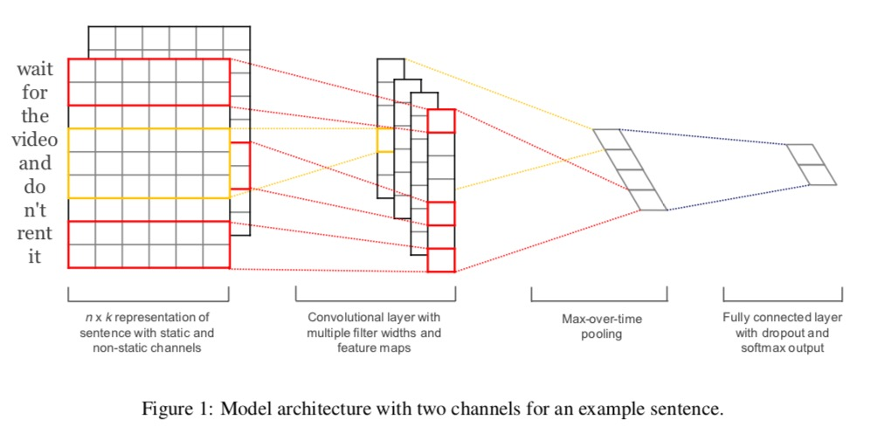

本篇文章重点介绍CNN在NLP领域的应用
为什么图像领域CNN如此广泛
CNN中的两大操作
- 卷积(Convolution)

- 池化(Pooling) 卷积是CNN的核心操作,卷积为什么可以提取特征:如上动图所示，卷积核(kernel)其实可以是一个 [X] 元素的检测器，观察最终得到的卷积输出,在需要检测的部分会得到更大的数值，从而将检测元素凸显出来。类似，如果我们期待检测出来一个 横线，那么卷积核形式是其中一行为大于1的数值，而其他行元素都是0或者接近0的元素。
CNN 可以看成一系列<卷积, 池化, 激活函数(ReLU)> 当然，顺序也可以是 <卷积, 激活, 池化> 卷积本身具有平移不变性,而图像本身就适合平移不变性,也即无论图像任意位置有一个苹果，我们都可以说图像里边有一个苹果。
池化可以保留主要特征的同时减少参数，防止过拟合，同时池化可以还有不变性的特点 池化的理解
CNN的操作可以看成每一层CNN都是提取图片中某一特征，而后续CNN就对之前提取的特征进行合成，得到更抽象的特征表示。而显然，图像是符合这一总结的。例如对于一张含有车的图片进行分类，图像低层次抽象可能是“横线”，“竖线(edge)”等，结合“横线，竖线” 可能提取出 "车的车轮"，“车的车窗”等(simple shape)。更高层次的CNN负责识别车的整个架构(more abstract shape)。
在卷积神经网络中，卷积核是作为神经网络的参数学习出来的，也就是特征工程可以通过网络自己学到。
附加问题: 为什么NLP领域RNN如此广泛
CNN的假设: 要求卷积对象有局部相关性 RNN的假设: 要求数据在时序上有局部相关性
显然文本更加符合时序相关性特征, 但是一定程度上譬如文本分类问题 含有"小猫"的文本很大程度上可以划分到 “动物” 体裁中，而无论出现在文本的那个位置，另外，模型无所谓对错，而是要找准适用场景,显然可以在NLP任务中尝试适用CNN
NLP中的CNN模型
应用最广泛的CNN模型 
Dynamic CNN 对自然语句进行建模
相较于Kim 模型的CNN, DCNN的改变有两点:
- 宽卷积(wide convolution)
- k-max pooling
参考文献
- Kim Y. Convolutional neural networks for sentence classification[J]. arXiv preprint arXiv:1408.5882, 2014.
- Kalchbrenner N, Grefenstette E, Blunsom P. A convolutional neural network for modelling sentences[J]. arXiv preprint arXiv:1404.2188, 2014.